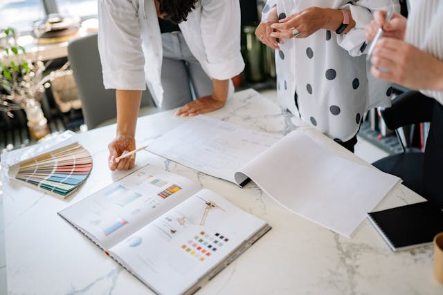
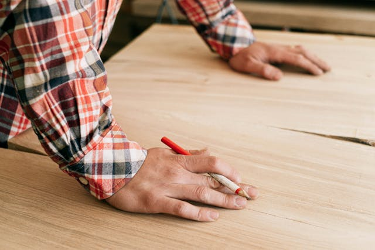

A tervezők

Tervezői csapatunk kiváló belsőépítész tervezőkből áll, többéves szakmai tapasztalattal
a hátuk mögött. A tervezési fázis 3-4 hónapot vesz igénybe, ahol az elsők között meghatározzuk a
stílust, majd elemeire lebontva a konyhabútort, a funkcionalitást szem előtt tartva megtervezzük a
bútort. A stílus mellett nagyon fontos szerepe van az elrendezésnek. Nemcsak a hagyományos U-, és
L-alakú elrendezésben gondolkodunk, sokkal inkább a helyszín adottságait vesszük figyelembe. A terveket
2D és 3D-ben is elkészítjük, hogy minél jobban el tudd képzelni a végeredményt.
A kapcsolattartók

Miután megvannak a tervek, elkezdődik a beszerzési folyamat. Kapcsolattartóink
segítségével kiválasztjátok a csempét vagy a konyha hátpanelt, a csaptelepet és frontfelületeket. Együtt
járjátok a
különböző Csempe és Csaptelep boltokat. Ez a számodra legmozgalmasabb és talán legizgalmasabb része a
konyha megvalósítási folyamatban. Ez a fázis körülbelül 1-2 hónapot vesz igénybe, a megrendelt
bútorlapok és az összes szükséges beszerelendő anyagok megérkezéséig /mosogatótálca, csapok, főzőlap,
hűtőszekrén...stb/
A kivitelezők

Kivitelezőink mind több mint 5 éve a szakmában dolgozó asztalosokból állnak. A
helyszíni megvalósítás mindig is izgalmas része volt a konyhaépítésnek, hiszen sok minden a helyszínen
dől el /pl. hogy nem teljesen egyenes a fal/. Szakértő csapatunk tagjai fel vannak készülve minden
eshetőségre, így bármilyen akadályt meg tudnak oldani. Egyediségünket pont a kivitelezési fázisban fogod
leginkább megtapasztalni.